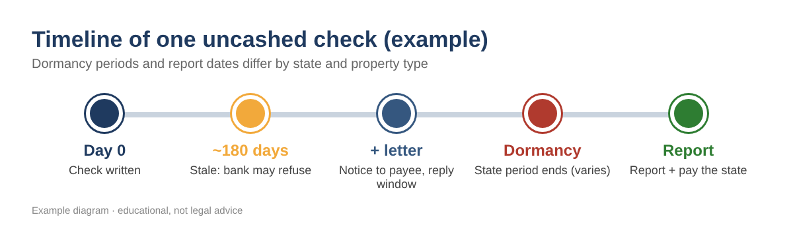
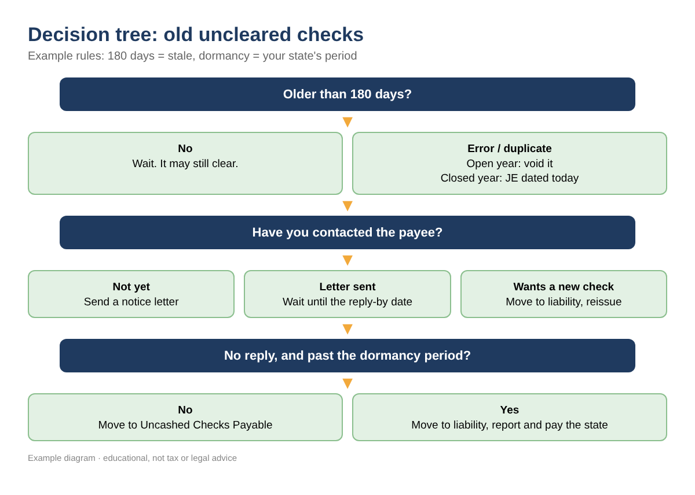
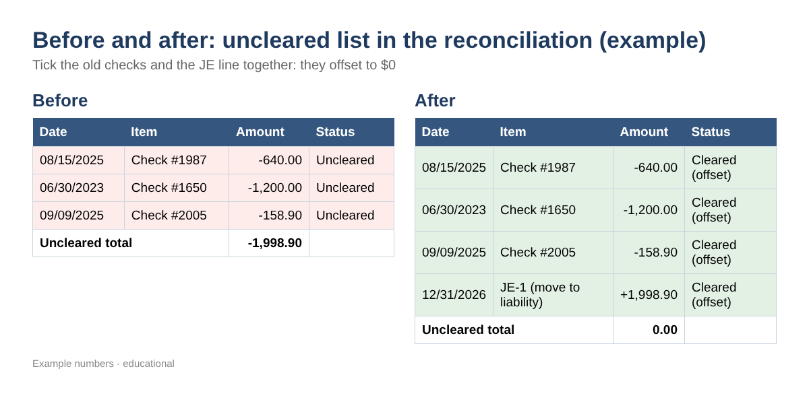

Old Uncleared Checks in Your Bank Reconciliation: How to Clear Them Without Changing a Filed Year
↓ Get the free Excel + PDF kit for this article
Open almost any small-business bank reconciliation and you will find them at the bottom: checks from last year, or from 2023, that never cleared. Maybe a deposit or two that never reached the bank. Every month they roll forward, every month someone scrolls past them, and at year-end they quietly overstate what you owe or what you have. This post walks through a clean, repeatable way to clear them out, using QuickBooks Desktop, QuickBooks Online or just a spreadsheet, without reopening a year whose tax return is already filed.
Why old uncleared checks are more than clutter
An uncleared check means your books say the money left, but the bank says it is still in your account. Three things make old ones a real problem:
- They may never clear. Under the Uniform Commercial Code (section 4-404, adopted by the states), a bank is not obliged to pay an ordinary, uncertified check presented more than six months after its date. A check older than about 180 days is called stale.
- The money is still owed to someone. Every state has an unclaimed property law. After a dormancy period with no contact, an uncashed vendor or payroll check can become property your business must report and send to the state. Periods differ by state and by type of property.
- Phantom deposits inflate cash and income. A deposit in your books that the bank never received is usually a duplicate, a bank-feed matching error, or a bounced payment.

Step 1: Get the list of uncleared items
QuickBooks Desktop
- Go to Reports > Banking > Previous Reconciliation, choose the bank account and your latest statement date, and pick the Detail report. Uncleared transactions are listed at the end.
- Or create Reports > Custom Reports > Transaction Detail, set the dates through your cleanup date, and on the Filters tab choose your bank account and Cleared = No.
- Export with Excel > Create New Worksheet.
QuickBooks Online
- Select Settings (gear) > Reconcile, then History by account. Choose the bank account and open the most recent reconciliation report; it shows the uncleared transactions as of that statement date.
- Or open the account register from the Chart of accounts (View register) and filter by reconcile status for items that are not cleared or reconciled.
- Export the report to Excel with the export icon. Menu names in QuickBooks Online change from time to time; if yours differ, search Intuit's help for "reconciliation report".
You only need five columns: Date, Type, Number, Name and Amount. Make check amounts positive with =ABS(E5).
Step 2: Age each item with three formulas
Put your cleanup date (for example 12/31/2026) in cell B1, your last closed tax year (for example 2025) in B2, and the dormancy years from your state's rules in B3. With dates in column A starting in row 5, type:
- Age in days: =$B$1-A5
- Stale: =IF($B$1-A5>180,"Yes","No")
- In a closed year: =IF(YEAR(A5)<=$B$2,"Yes","No")
- Past dormancy: =IF(EDATE(A5,12*$B$3)<=$B$1,"Yes","No")
These formulas work the same in Excel and Google Sheets.
| Date | Item | Amount | Age | Stale | Closed year | Past dormancy* |
|---|---|---|---|---|---|---|
| 11/20/2026 | Check #2210 | 186.40 | 41 | No | No | No |
| 04/02/2026 | Check #2101 | 950.00 | 273 | Yes | No | No |
| 08/15/2025 | Check #1987 | 640.00 | 503 | Yes | Yes | No |
| 06/30/2023 | Check #1650 | 1,200.00 | 1280 | Yes | Yes | Yes |
| 10/30/2026 | Deposit | 1,500.00 | 62 | Yes | No | n/a |
Table 1. EXAMPLE values. Cleanup date 12/31/2026, last closed year 2025, *3-year dormancy used only as an example.
Step 3: Decide what each item needs
Work down the decision tree below. The key idea: never delete old checks, and never void a check dated in a year you already filed. Voiding it there changes that year's expenses (and maybe a 1099 or payroll form). Instead, fix it with an entry dated in the current, open period.

- Not stale yet: wait.
- Error or duplicate, open year: void it on its own date.
- Error or not owed, closed year: journal entry today, debit the bank and credit the original account (ask your CPA where the credit belongs).
- Stale and still owed: contact the payee first.
Step 4: Contact the payee
Send a short letter: the check number, date and amount, a reply-by date (30 days is common), and a sentence that the amount may have to be reported to the state as unclaimed property if you do not hear back. Keep a copy and the mailing date; many states expect proof of this "due diligence" notice before you report. If the payee asks for a new check, reissue it (see Step 5 so the expense is not counted twice).
Step 5: Book the cleanup entry
First create one account: type Other Current Liability, name Uncashed Checks Payable. In QuickBooks Desktop use Lists > Chart of Accounts > Account > New; in QuickBooks Online use Chart of accounts > New. Then enter one journal entry dated on your cleanup date (Desktop: Company > Make General Journal Entries; Online: + New > Journal entry):
| Account | Debit | Credit | Memo |
|---|---|---|---|
| Checking | 1,998.90 | Uncashed checks #1987, #1650, #2005 | |
| Uncashed Checks Payable | 1,998.90 | Owed to payees or the state |
Table 2. EXAMPLE journal entry: $640.00 + $1,200.00 + $158.90 = $1,998.90.
When you later reissue a check or pay the state, code that payment to Uncashed Checks Payable, not to the original expense.
Step 6: Reconcile both sides together
In your next reconciliation (Desktop: Banking > Reconcile; Online: Settings > Reconcile), tick each old check and the journal entry line. They offset to zero, so the cleared balance still equals the bank statement, and the old items finally drop off the uncleared list. In QuickBooks Online, do not try to match the journal entry in the bank feed; it will never appear there.

Step 7: Report to the state when required
Find your state's unclaimed property program through unclaimed.org (the National Association of Unclaimed Property Administrators). Note the dormancy period for vendor and payroll checks, the due-diligence letter rules, and the annual report date. Generally the payee's last known address decides which state gets the report. File on time and pay from the liability account.
Common mistakes
- Deleting old checks so the reconciliation "looks clean". The audit trail is gone and the cleared balance breaks.
- Voiding checks in a year whose return is filed, which changes that year's numbers.
- Reversing the expense into income when the money is still owed to a payee or the state.
- Voiding old payroll checks without talking to the payroll provider.
- Coding a reissued check to the original expense, so the expense is counted twice.
- Treating every old deposit as lost money. Many are duplicates of the same bank-feed item.
FAQ
Can I just void a check from two years ago?
Only if that year is still open and nothing was filed from it. Otherwise use a current-period journal entry so filed reports stay the same.
Is a check that is more than six months old invalid?
Not exactly. The bank does not have to pay it, but it may. More importantly, the debt to the payee does not disappear.
Do I owe the state money for every stale check?
Only once it passes your state's dormancy period with no contact and you have followed any notice rules. Check your state's holder guide.
What about an old deposit that never cleared?
Look for it on the bank statement first. If it was recorded twice, void the duplicate in an open year, or credit the bank with a current-period entry in a closed year.
Checklist
- Reconcile through your cleanup date
- Export the uncleared list
- Age each item (stale, closed year, dormancy)
- Void open-year errors
- Send letters for stale checks
- Enter the current-period journal entry
- Clear old items and the entry together
- Calendar your state's report date
You can download the ready-made Stale Check & Uncleared Item Cleanup Kit for free in the Free kit download box below (Excel + PDF guide, no sign-up).
This article is educational information, not tax, legal or accounting advice. Unclaimed property rules vary by state; confirm with your CPA or attorney. All example numbers are made up. QuickBooks is a registered trademark of Intuit Inc.; not affiliated with or endorsed by Intuit.
Sources
- Intuit: How to handle stale-dated checks
- UCC 4-404 (Cornell LII)
- NAUPA: unclaimed.org
- Intuit help: Fix issues at the end of a reconciliation in QuickBooks Online
- Intuit Community: Old unreconciled transactions in QuickBooks Desktop
- Intuit Community: Reconcile uncleared transactions from previous years
Free kit download
Tools to follow this article step by step. No sign-up needed.
- Excel workbook (.xlsx)Stale_Check_Cleanup_Tracker_2026_EN.xlsx · 79 KB
- Step-by-step guide (PDF)Stale_Check_Cleanup_Guide_2026_EN.pdf · 94 KB
Free to use for yourself and your own business; please do not resell or redistribute. General information, not tax, legal or accounting advice; check every figure against your own records. QuickBooks is a trademark of Intuit Inc.; BIZLEX is not affiliated with Intuit.